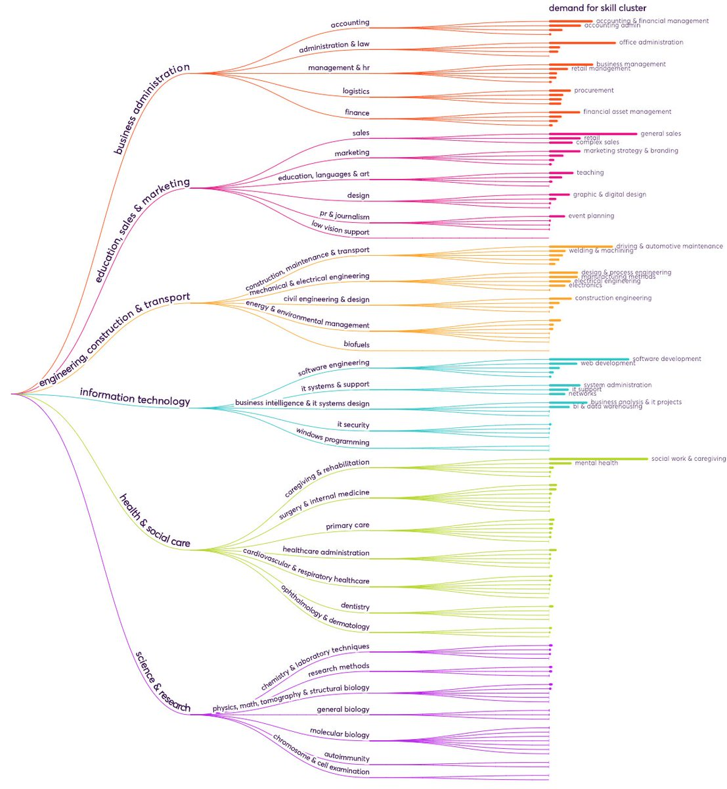

Initially, I felt developing a Skills Taxonomy is an elementary task which can be performed just by arranging the skills in an hierarchical structure. But in my journey of 5 weeks, I have realised the significance of constructing a comprehensive Skills Taxonomy and the strenuous efforts that go into structuring it.
Assemblage of Skills Taxonomy is a tedious task which involves numerous steps beginning with scraping the data from websites, study of Skills Taxonomies of different websites, Normalizing and cleaning the data, studying and applying suitable algorithms to data to obtain the skills in required format, working on improving the accuracy of algorithms etc. A minute failure in Skills Oncology deteriorates the value of the website.
There are numerous tools to perform web scraping but the reason I chose selenium over them is that it is an automation testing framework for web applications/websites which can also control the browser to navigate the website just like a human. Selenium uses a web-driver package that can take control of the browser and mimic user-oriented actions to trigger desired events.
Assemblage of Skills Taxonomy is a tedious task which involves numerous steps beginning with scraping the data from websites, study of Skills Taxonomies of different websites, Normalizing and cleaning the data, studying and applying suitable algorithms to data to obtain the skills in required format, working on improving the accuracy of algorithms etc. A minute failure in Skills Oncology deteriorates the value of the website.
Sprint 1 gave me an exposure to selenium and its architecture. I’ve scraped all the 531 courses and 31 learning Paths from LinkedIn learning in the Data science domain. I had structured the obtained data into the required pre-defined schema as a JSON format and also converted it into a CSV file as well.
The O*NET database contains a rich set of variables that describe work and worker characteristics, including skill requirements. The O*NET-SOC taxonomy defines the occupations, and the Content Model outlines which information is collected; the Data Collection program brings these frameworks to life with results from the working public.
The experience of Sprint 2 was really terrific. Here, we had to study O*NET website and create a unified schema for the Skills Ontology. Website consisted of robust data of 38 files, for which we found the linkage and created a schema using Python libraries (Pandas, Numpy). Initially, analysing the data in the website created a turmoil, later after a great endeavour we were able to connect the threads of the data. Finally, we obtained 45K skills(technical, non-technical) from the website.

The reason for choosing Amazon services is because they are Highly Scalable, Durable, Safe & Secure and they also Manage Clusters easily.
Amazon API Gateway is an AWS service for creating, publishing, maintaining, monitoring, and securing REST, HTTP, and WebSocket APIs at any scale. API developers can create APIs that access AWS or other web services, as well as data stored in the AWS Cloud .
AWS Lambda is a serverless compute service that runs the code in response to events and automatically manages the underlying compute resources.
Amazon Simple Storage Service (Amazon S3) is storage for the internet. Amazon S3 can be used to store and retrieve any amount of data at any time, from anywhere on the web.
In Sprint 3, I took a dive into AWS services and explored API Gateway, Lambda, S3. Furthermore, I uploaded the files in S3 bucket, developed a code for creating API calls for both skills and job titles using POST method and provided authorization to internal teams for these API calls for extracting the required data using API Gateway. Analysed and modified the code as per requirement for all the error codes generated while accessing the API calls through POSTMAN tool.
The reason for choosing BERT algorithm is that it was developed by Google and it is the most lucrative NLP model available for context matching. By applying BERT, Google is able to understand the relationship between words in a query and present the closest matching result to the searcher.
FuzzyWuzzy algorithm is mainly used for string matching and hence we used it for matching the job titles. It also has more powerful functions to help with matching strings in more complex situations. The partial ratio() function allows us to perform substring matching.
For Sprint 4, I had researched multiple String matching algorithms and NLP models for matching the Job titles and skills. Later in my analysis, I found BERT and FuzzyWuzzy algorithms as the best fit for my requirement. I’ve applied both BERT and FuzzyWuzzy algorithms on a sample data set of around 2000 job titles and skills, compared the results manually and calculated accuracy using a confusion matrix and these results led us to come to a conclusion of cleaning and normalizing the data to improve accuracy of the algorithm as per the requirement .


For Sprint 5, I had worked on improving the accuracy of the algorithm. For this purpose, I’ve applied BERT algorithm on a sample data set of around 1000 Job titles before and after cleaning the data and evaluated the results manually, calculated accuracy, precision,frequency using confusion matrix and these results led us to come to a conclusion of change in True positives and False positives data for the manually cleaned and uncleaned data. Cleaning the data manually and finding the pattern to remove frivolous data is a tedious task.